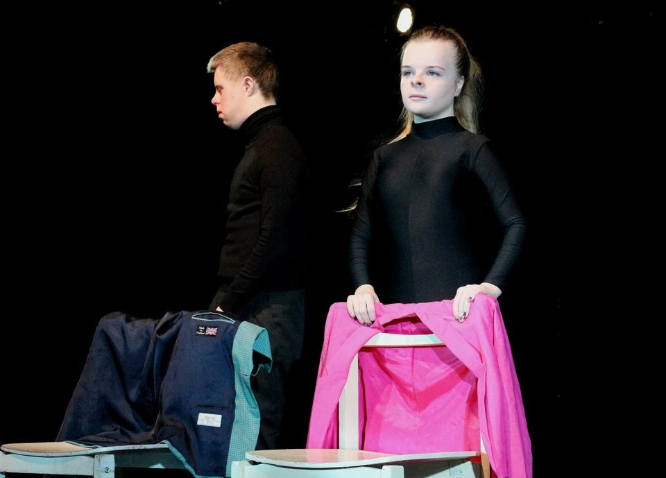
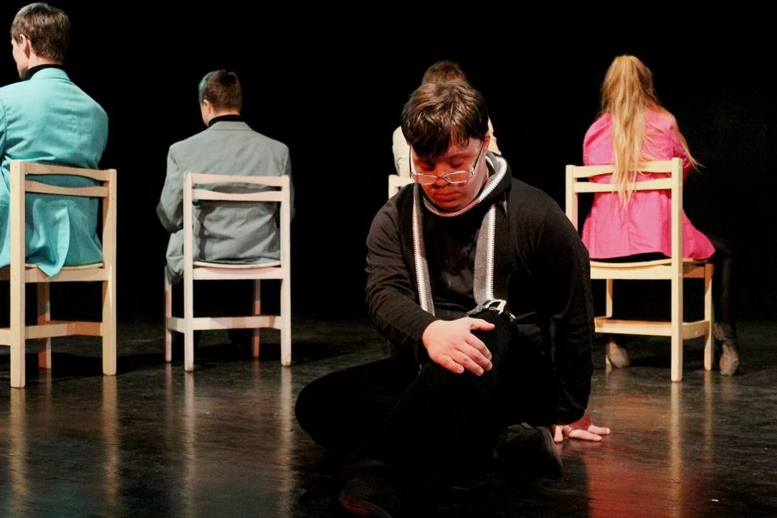
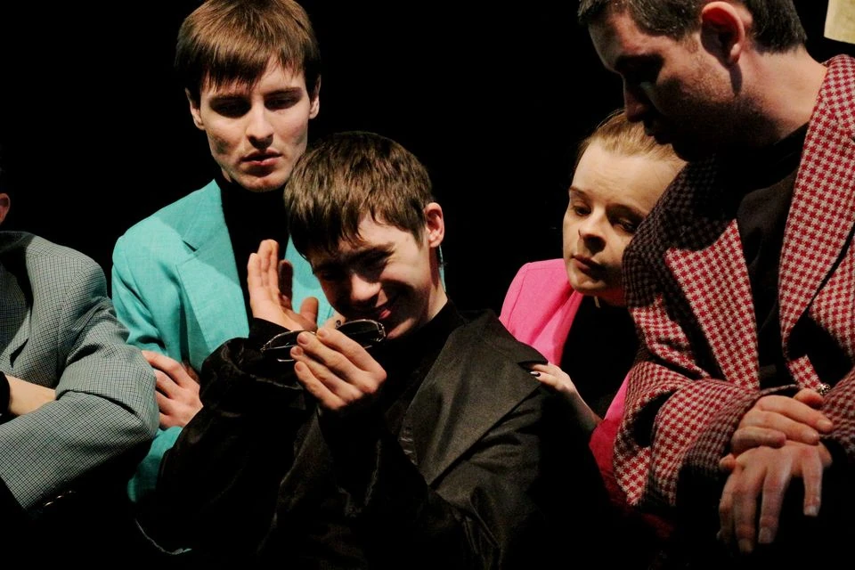

Ukraine · Inclusive theatre
Folk Amateur Theatre – Studio PAROSTKI
Happy Exiles is a story about openness and isolation, about loneliness and exile, HEART, FAITH and LOVE. The piece is based on participants' ideas and experiences.
- Inclusive theatre
- Duration: 24 min
- Kyiv, Ukraine
Video (YouTube)
Gallery



About the performance
Everyone wants a place in the sun—narrow or spacious. The piece asks whether all means of getting one's unique place are justified. A story about openness and isolation, loneliness and exile, HEART, FAITH and LOVE.
The performance is based on ideas and experiences of participants. PAROSTKI develop movement and stage language as tools for rehabilitation and shared creativity.
Festival ensembles
Expand ensemble list
Festival partners
ORGANIZERS:


COLLABORATION:


MEDIA PATRONAGE: